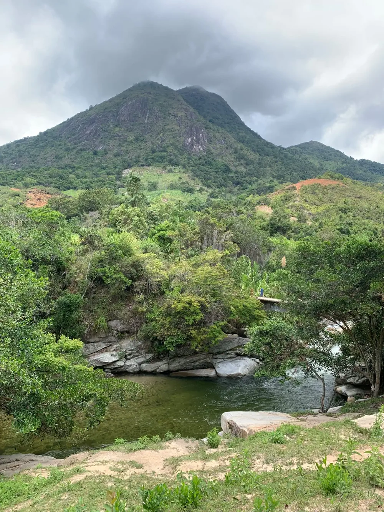
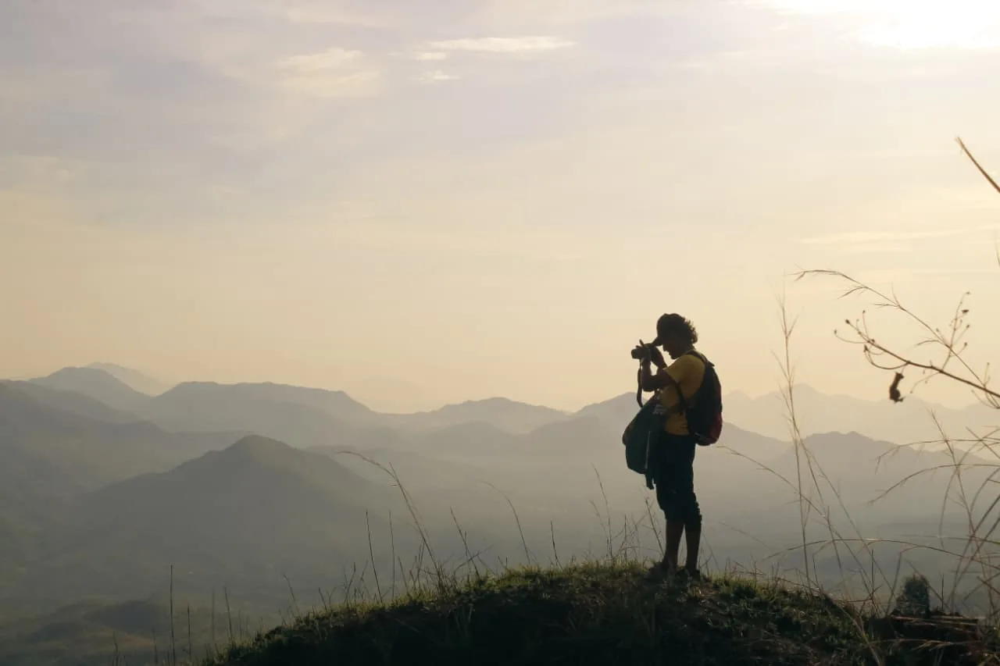
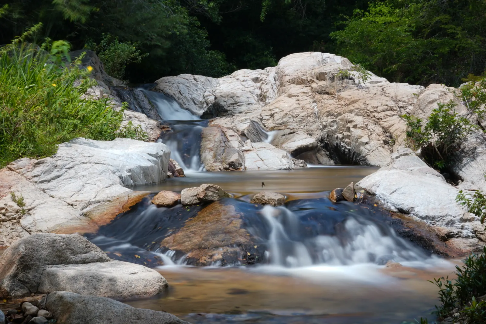
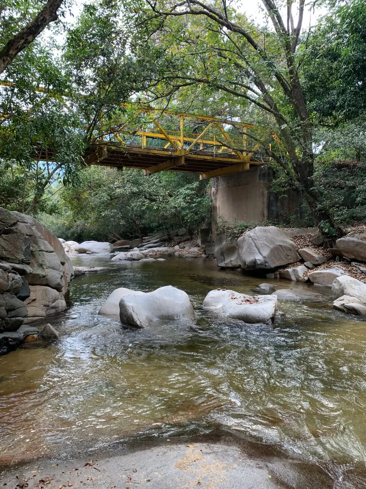

A Plan A
Atánquez y el río Guatapurí o Chemesquemena.
- Atánquez
- Artesanas
- Almuerzo
- Río Guatapurí o Chemesquemena

Sierra Nevada · Atánquez
Caminatas, cultura, naturaleza y saberes. Seis comunidades, seis destinos y muchas historias por descubrir, caminando conmigo.
Te invitamos a descubrir el territorio del Pueblo Indígena Kankuamo, a través de experiencias que conectan con la naturaleza, la cultura y la memoria de sus comunidades.
Rutas
Las tres empiezan en Atánquez y llevan almuerzo tradicional.

A Plan A


C Plan C

Soy kankuamo, de Atánquez, la capital del resguardo indígena kankuamo, en la Sierra Nevada de Santa Marta.
Hace años muestro la Sierra en redes como @elatanquero. También dirijo el pódcast El Mochilón de la Sierra y el programa Voces Kankuamas en Tayrona Stereo.
En los recorridos te enseño mi pueblo como yo lo conozco: sus calles, sus ríos, su comida y su gente. Vamos sin afán, con tiempo para conversar y para disfrutar el camino.